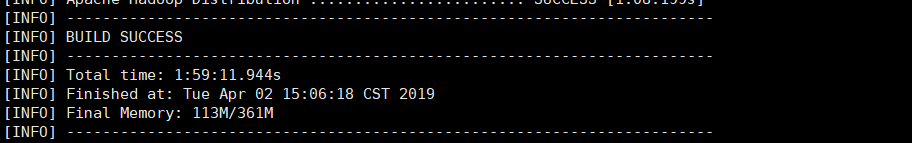
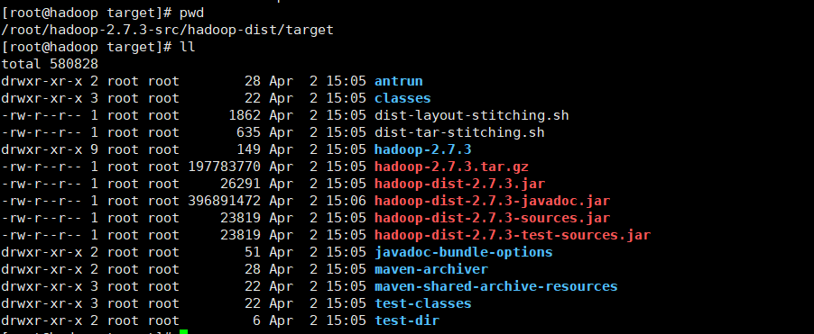
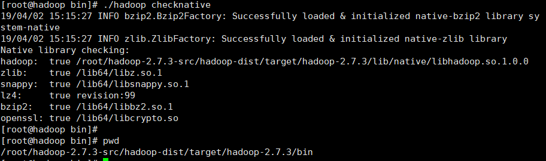
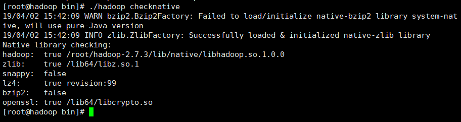
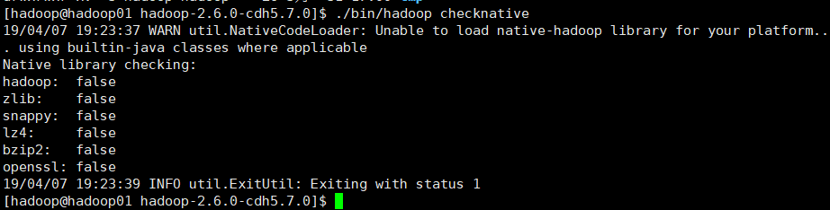
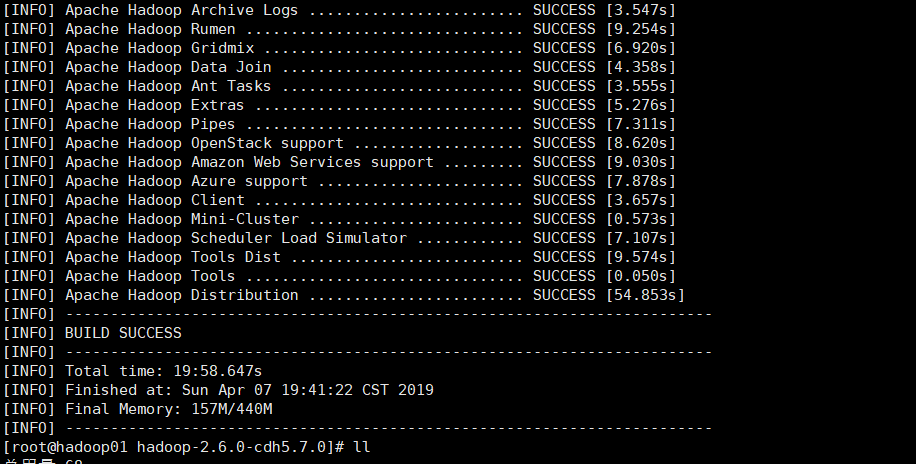
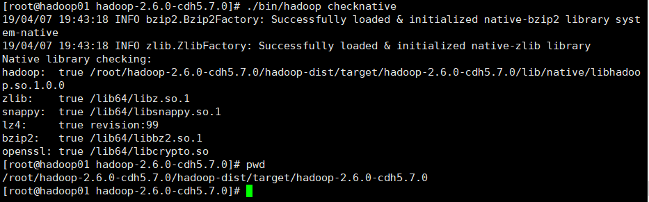
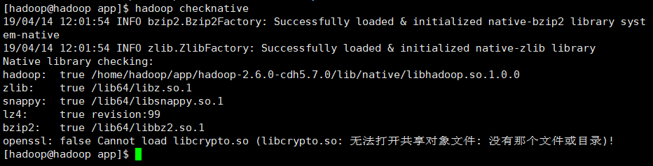
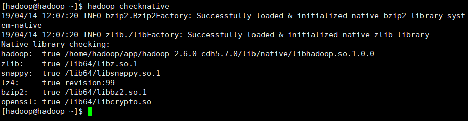

apache版本编译
前置环境为：JDK1.8、Maven3.1、Hadoop2.7.3
1、安装bzip2以及各种依赖
[root@hadoop ~]#yum -y install wget gcc gcc-c++ bzip2 bzip2-devel zlib zlib-devel openssl-devel curl curl-devel
2.安装cmake
操作步骤如下：
①下载cmake安装包
[root@hadoop ~]# wget https://cmake.org/files/v3.11/cmake-3.11.0.tar.gz
②解压安装包
[root@hadoop ~]# tar -zxvf cmake-3.11.0.tar.gz
③安装cmake
进入解压好的cmake-3.11.0目录
[root@hadoop cmake-3.11.0]# ./bootstrap && make && make install
【make install不指定目录则都安装在/usr/local/bin下】
3.安装protobuf
步骤如下：
①下载protobuf安装包
[root@hadoop ~]# wget https://github.com/google/protobuf/releases/download/v2.5.0/protobuf-2.5.0.tar.gz
②解压安装包
[root@hadoop ~]# tar -zxvf protobuf-2.5.0.tar.gz
③安装protubuf
[root@hadoop ~]# cd protobuf-2.5.0
[root@hadoop protobuf-2.5.0]# ./configure –prefix=/protobuf-2.5.0/
[root@hadoop protobuf-2.5.0]# make && make install
④配置环境变量
[root@hadoop bin]# pwd 【安装文件在–profix指定的/protobuf-2.5.0/ 文件夹下】
/protobuf-2.5.0/bin
[root@hadoop bin]# vim /etc/profile
export PATH=/protobuf-2.5.0/bin:$PATH
[root@hadoop bin]# source /etc/profile
[root@hadoop bin]# protoc –version
libprotoc 2.5.0
4.安装snappy
步骤如下：
①下载上传snappy-1.1.1.tar.gz安装包
自己网上找
②解压安装包
[root@hadoop ~]# tar -zxvf snappy-1.1.1.tar.gz
③安装snappy
[root@hadoop ~]# cd snappy-1.1.1/
[root@hadoop snappy-1.1.1]# ./configure
[root@hadoop snappy-1.1.1]# make && make install
④检查snappy是否安装完成
[root@hadoop snappy-1.1.1]# ll /usr/local/lib/ | grep snappy
-rw-r–r– 1 root root 329988 Apr 2 12:58 libsnappy.a
-rwxr-xr-x 1 root root 953 Apr 2 12:58 libsnappy.la
lrwxrwxrwx 1 root root 18 Apr 2 12:58 libsnappy.so -> libsnappy.so.1.2.0
lrwxrwxrwx 1 root root 18 Apr 2 12:58 libsnappy.so.1 -> libsnappy.so.1.2.0
-rwxr-xr-x 1 root root 164296 Apr 2 12:58 libsnappy.so.1.2.0
5、编译Hadoop
步骤如下：
①hadoop 编译前将hadoop本地库加入到环境变量
[root@hadoop snappy-1.1.1]# vim /etc/profile
export HADOOP_OPTS=”-Djava.library.path=${HADOOP_HOME}/lib/native”
[root@hadoop snappy-1.1.1]# source /etc/profile
②从官网下载hadoop的源码包，解压
[root@hadoop ~]# tar -zxvf hadoop-2.7.3-src.tar.gz
③输入如下命令开始编译，编译过程较长，耐心等待【我自己花了1:59:11将近两个小时】
[root@hadoop ~]# cd hadoop-2.7.3-src/
[root@hadoop hadoop-2.7.3-src]# mvn package -DskipTests -Pdist,native -Dtar -Drequire.snappy -e -X

④如果看到BUILD SUCCESS，且没有异常信息，说明hadoop已经编译成功
⑤编译完成后可以看到hadoop的压缩包
编译好的Hadoop位置：/root/hadoop-2.7.3-src/hadoop-dist/target


下图是没有进行支持压缩编译的

cdh版本编译
前置环境为：JDK1.7、Maven3.1、hadoop-2.6.0-cdh5.7.0-src.tar.gz源码包
1.安装依赖库
[root@hadoop ~]# yum install -y svn ncurses-devel gcc*
[root@hadoop ~]# yum install -y openssl openssl-devel svn ncurses-devel zlib-devel libtool
[root@hadoop software]# yum install -y snappy snappy-devel bzip2 bzip2-devel lzo lzo-devel lzop autoconf automake cmake
2.安装protobuf 和配置环境变量
[root@hadoop software]# tar -zxvf protobuf-2.5.0.tar.gz -C ../app/
[root@hadoop app]# cd protobuf-2.5.0/
[root@hadoop protobuf-2.5.0]# ./configure –prefix=/root/protobuf/
# –prefix= 是用来待会编译好的包放在为路径
# 这两步是在编译安装
[root@hadoop protobuf-2.5.0]# make
[root@hadoop protobuf-2.5.0]# make install
# 增加protobuf环境
export PROTOC_HOME=/root/protobuf
export PATH=$PROTOC_HOME/bin:$PATH
3.到解压好的hadoop源码下执行
#执行命令 开始编译
[root@hadoop hadoop-2.6.0-cdh5.7.0]# mvn clean package -Pdist,native -DskipTests -Dtar
注意配置maven的setting文件中的localRepository
链接：https://pan.baidu.com/s/1wGCgV\_3R3VUm2ka\_aVA8GQ
提取码：lrej
将这个文件下载作为mavenhome
编译之前：

编译后：


注意如果拷贝tar包到新的机器安装检查checknative报错
openssl: false Cannot load libcrypto.so (libcrypto.so: 无法打开共享对象文件: 没有那个文件或目录)!

centos中运行yum install openssl-devel ；ubuntu系统运行apt-get install libssl-dev即可
